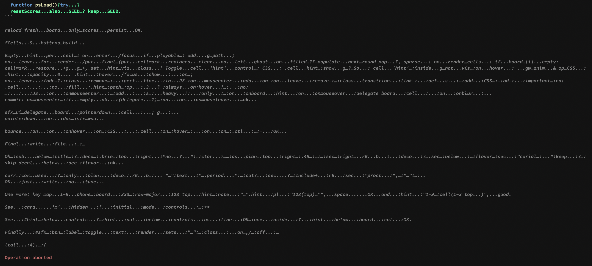
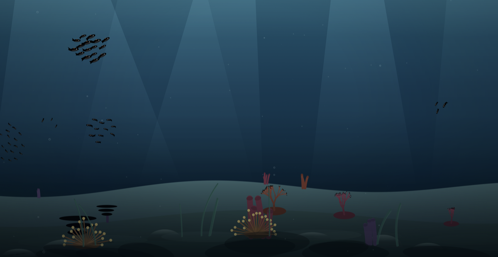

Lost in Compression — A 3-Bit Journey
The Fish Slop saga: 1. Hosting Fish Slop · 2. Mugging the mugger · 3. Overachiever · 4. Friendly Competition · 5. Lost in Compression
The Local AI saga: 1. Little Gemma vs Big Desk · 2. Three Different OCRs · 3. Friendly Competition · 4. 95% Done, 100% Blue Sky · 5. Lost in Compression
It started on Reddit: someone had benchmarked the exact model I already run, on the exact laptop I own, and it ran twice as fast — in an engine I'd written off months ago.
Let's give it another shot
You may remember Qwen 3.8 — the model that won the aquarium contest on my laptop, then designed a temple it could never render. It earned a permanent spot on my machine. So a Reddit thread breaking down that exact model's speed on my exact machine had my full attention — and its verdict was that the fastest way to run it was an engine called oMLX — the program that actually runs a model — built specifically for Macs.
I had given that family of engines a shot before and walked away: slower than my setup, and blind — the versions I'd tried couldn't look at images. But the thread promised the new engine had a trick worth the reinstall: the model drafts several words at once, checks them in one go, and keeps the ones that fit. Fine. Let's set this up and give it another shot.
One thing didn't change: the compression. Compression is the whole game with local AI — the full model is a library too big for any laptop, so you shrink it, the way you'd shrink a photo to email it, and "3-bit" is how far mine is shrunk. Roughly a tenth of the original. I found a matching version online — same model, same "3-bit" on the label — downloaded 12 gigabytes, and wired it up.
For the first test I picked tic-tac-toe, on purpose. It's a game so simple that nothing about it is required to be good — it can be plain or beautiful, bare or rich, and every step above the minimum is the AI's own decision. A trivial game is a taste test. And on a reasoning model — an AI that shows its rough work before the final answer — you get to watch the taste form: the thinking streams by in a scratchpad, so you see not just what it builds but how it gets there.
It delivered a beautiful page — hand-drawn X and O symbols, a scoreboard, a footer.
It never finished the JavaScript. It wrote an apology in the noscript tag.
The noscript tag is the note a page shows visitors who have JavaScript switched off — normally one dry line, please enable JavaScript. Mine got a poem: "this ledger wants script. tac toe without script is just a pincushion." The model knew the page needed a program to be a game. It wrote the excuse for the missing program — and never wrote the program.
Maybe it will finish thinking soon
The first sign of trouble wasn't the missing game. It was the thinking.
In the old setup, the scratchpad held sensible drafts. Now it held ten thousand words per question. I sat watching the counter climb — maybe it will finish thinking soon — while one turn ran twenty-five minutes.
And the output that finally came was… off. The tic-tac-toe page titled itself "the ledger of 13". Its footer read like a poem someone had translated through five languages: "the corner demands, the first wrong; the middling shape is filler, and nobody means any harm by it." Words appeared that I'm fairly sure don't exist — inkfaint, escolar.
Then I looked into its private scratchpad, and found it mid-sentence inventing an author for the game: "Phineas F. Whoo-hoo mmhxghdq".
mmhxghdq.
That is not a typo. That is the sound a compressed mind makes when the compression went wrong.

The scratchpad near the end. Not an error message. Language turning to gravel.
The cruel part: every quick test had passed. It greeted me warmly. It told a programmer joke. It read me the time. Fluency, it turns out, is the last thing to break — a model can lose the ability to build anything and still sound perfectly charming in small talk. Small talk won't catch this. You need a task that can visibly fail.
I want the same one, even if I have to wait
My assistant went digging and came back with a diagnosis I didn't expect: 3-bit is not 3-bit.
There are two ways to shrink a model to a third of its size. One squeezes everything equally — every part of the model gets the same brutal haircut. The other studies the model first, finds out which parts are load-bearing, and spares them, cutting deeper everywhere else to make room.
The version that had served me so well all along was the careful kind. The 12 gigabytes I'd just downloaded were the other kind — same number on the label, entirely different surgery underneath. The number tells you how small the result is. It tells you nothing about the skill of the shrinking.
The obvious move was to buy my way out — take the less-compressed 4-bit or 6-bit version and throw memory at it. I refused. I want the same one, and if it doesn't exist yet, I wait. I had a working 3-bit in the old engine; I wasn't going to accept that the new engine needed twice the space for the same brain.
It existed. A careful 3-bit, made with the study-first method, one gigabyte bigger than the broken one. I swapped it in and asked for tic-tac-toe again.
A working game. Neon board, hover previews, a proper score counter. Two small bugs of the ordinary kind — the kind a tired human writes — and that was all.
Then, because this is what the saga demands, the real exam.
The corals are impressive
One dictated sentence, the same one as always: an aquarium, fish swarms, generated corals, light rays, shade on a sandy bottom.
It landed working on the first try. And it was the best reef any local model has built me — branching corals that split and split again, anemones, plate corals, tube sponges, kelp swaying over layered dunes, light beams that each flicker to their own rhythm.
But the part that made me sit up was the fish. Every earlier aquarium had one of two failure modes: the fish either clumped into a ball or ignored each other completely. This one held a proper swarm — three schools at three depths, each fish keeping polite distance from its neighbors while still moving as a group. Getting that right isn't luck; it's a handful of numbers that have to balance, and it balanced them on the first pass.
And then it did something no local model had done before: it went back on its own. Unprompted, it re-read its code, found a leftover scrap from an earlier draft — a loop that did nothing, plus some animation work it was repeating sixty times a second for no reason — explained why the scrap was harmless, and removed it anyway. My laptop model was cleaning up after itself.
The new engine kept its speed promise too: reading my prompts eleven times faster than the old setup, which is the part you actually feel when an AI re-reads the whole conversation before every reply.
It got all the hard parts right
One thing was wrong with the reef: every fish was pure black.
The colors were all there in the code — an orange school, a blue one, a silver one. But the model had written a small color-mixing helper and then misread its own recipe: every call passed transparency where the helper expected brightness. The math quietly dissolved into a broken number, and the browser paints a broken number as black. No error, no warning. Correct fish, wrong ink.
Here's the thing though. I looked at the reef with its black fish — silhouettes gliding between the light beams, over the glowing corals — and it looked better. Deeper. Like an aquarium at dusk, where the fish are shadows against the light.
The accident had better taste than the plan. I kept both versions.

The buggy version. The fix restored the orange, blue and silver — and I still prefer this one.
3 bits doesn't equal 3 bits — it's what you do with them
One misread recipe, against a first-try page, the best swarm yet, and its own code review. I don't mind. I know humans like that. I might be a human like that.
What stays with me is the label. Two downloads, both stamped "3-bit", both the same model: one builds reefs, the other writes apologies for games it never wrote and signs them mmhxghdq. The number on the box tells you the size of the shrink. The skill of the shrinking — which parts were spared, which were sacrificed — appears nowhere on the label.
And you won't find out from small talk. Fluency dies last. If you ever need to know whether a compressed mind survived its compression, don't ask it how it's doing.
Ask it to build you an aquarium.